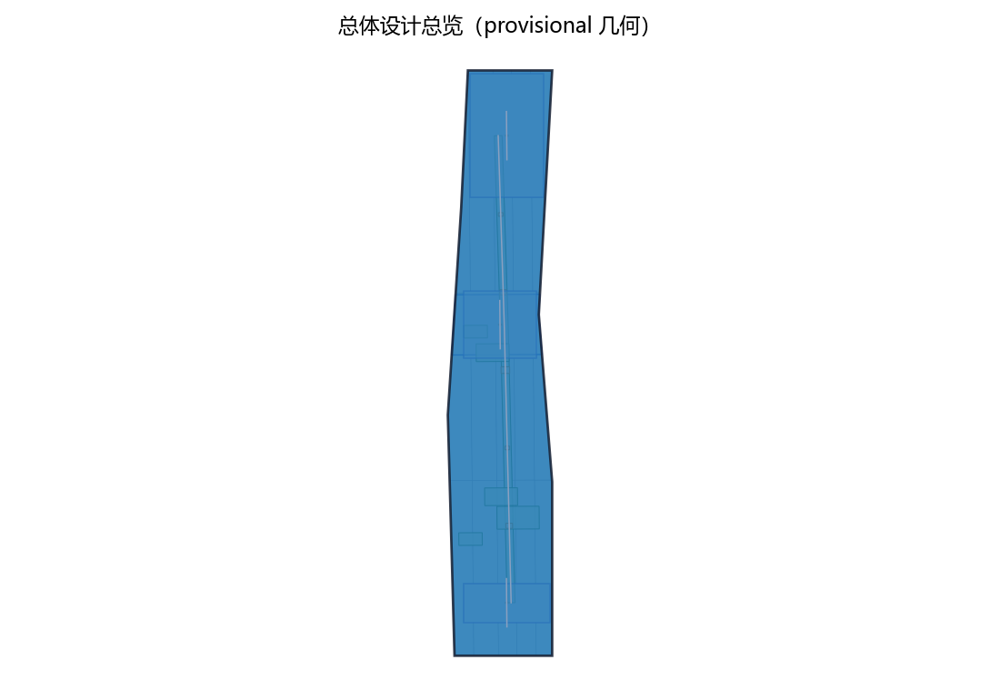
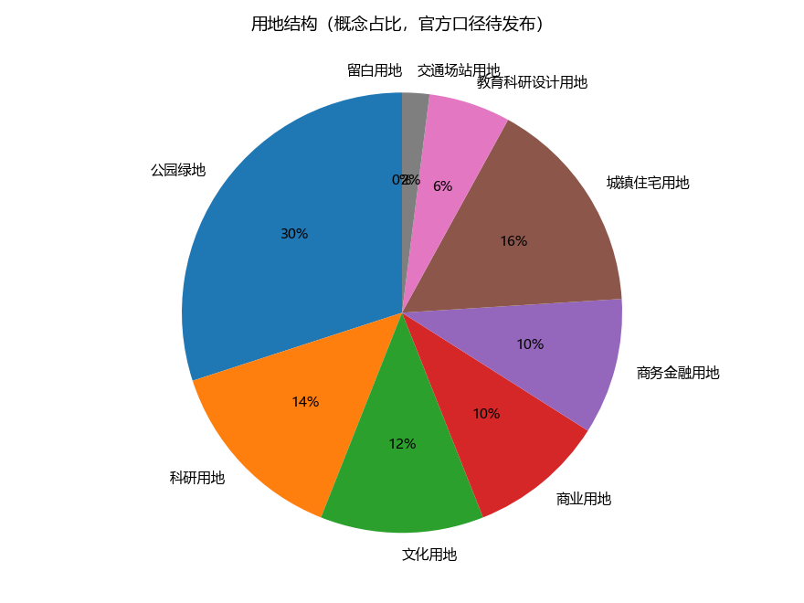
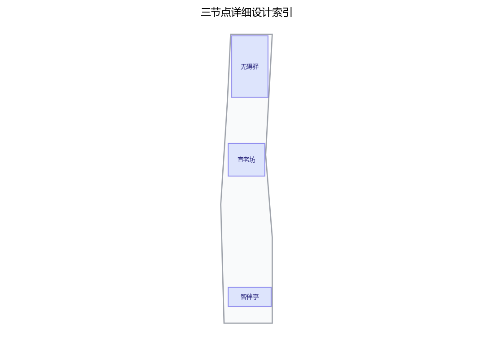
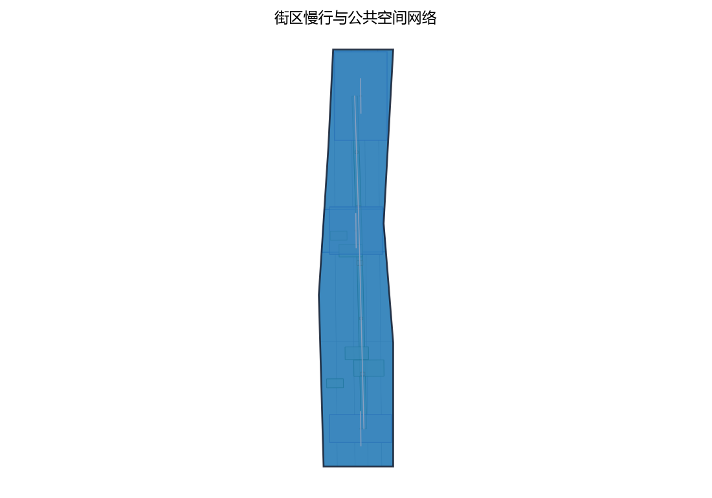
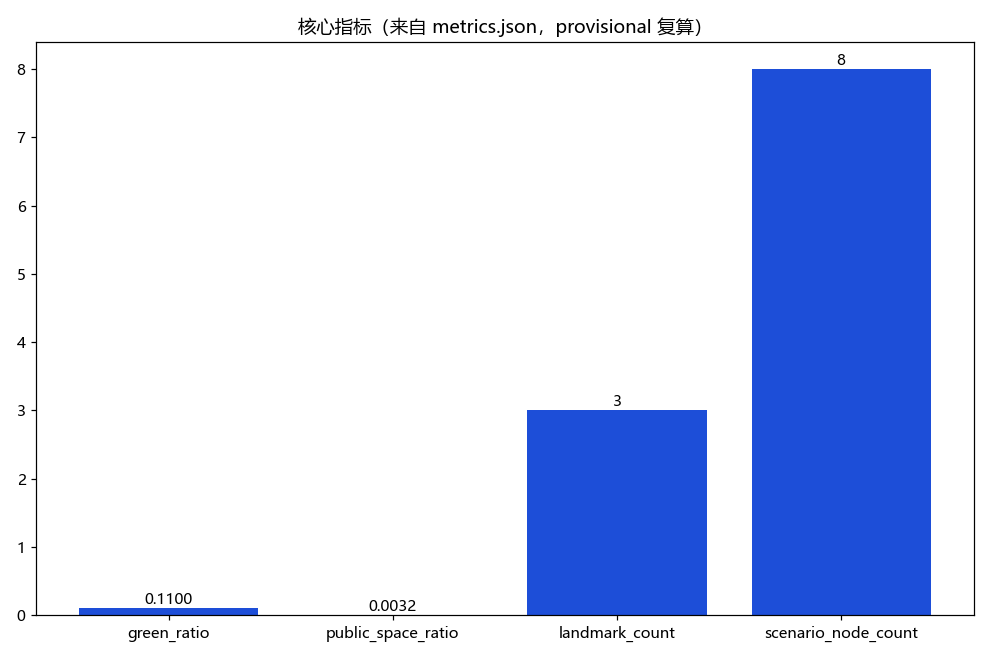

宜老智环：无障碍与适老化环境体系（概念）
以「宜老智环（CARE·JZ · 无障碍与适老化环境体系）」构建沿京张AI创新带的无障碍适老化环境概念：以「无碍驿」为无障碍慢行与接驳服务节点（连续无障碍慢行网络与轨道站点无障碍接驳），「宜老坊」为适老化社区更新示范单元（存量更新中坡道化、电梯加装与标识系统提升，不预设数值），「智伴亭」为AI辅助适老化公共信息服务站点（适老化设施盘点与匿名聚合服务，概念性公共数据服务建议），五类AI+场景（无障碍路径规划AI、适老化设施盘点AI、空间使用匿名感知AI、老年需求反馈AI、陪伴服务匹配AI）仅处理匿名聚合数据、关键决策人工复核、禁止过度监控，交通慢行优先、全区连续无障碍慢行轴贯通三节点，适老化过街与休憩系统，分期实施+无障碍体检与年度提升计划、老年群体参与渠道。全部为概念建议、参考方案，不给出容积率、建筑高度、具体拆改留或工程实施结论，不编造无障碍改造数据，基于 provisional 边界，官方数据发布后复算。
设计依据与资料清单
资料清单所列公开史料、规划报道与通则规范等均为概念工作依据清单，并非本包已获取的数据；本包实际使用的全部数据见 sources.json，未获取项已在风险与缺失数据说明中如实标注。 本节所列均为公开口径引用清单，非已获取数据。《无障碍环境建设法》（2023年9月1日施行）明确新建、改建、扩建及更新改造项目应同步建设无障碍设施；《老年人权益保障法》及民政、住建等部门关于适老化改造与老年友好型社会建设的指导意见作为政策参照；征集公告、任务书及设计条件文本界定范围与成果要求。正式设计阶段须以官方发布文本校核更新，本草案不引用未经核实的数值与条款细目。
证据锚点：来源、来源（组织方公告与任务书为文本口径依据）。
三层范围工作框架
三层成果逐级传导：统筹研究输出的低碳创新环境与沿线协同判断约束总体设计，总体设计校核的碳汇空间布局、低碳单元与时序生长落实到节点详设；每层均保留与任务书对应章节的机器可读证据锚点，便于评审对照。 本方案按"统筹研究—总体设计—重点区域"三层开展，各层边界均标注provisional，待任务书与现场校核后修正。统筹研究层梳理京张铁路沿线高校、科创片区与住区格局，形成无障碍适老化环境与城市产业协同的总体判断；总体设计层以京张铁路遗址公园绿带为骨架，开展控规深度的概念性城市设计；重点区域层选取三个原创概念节点深化。三层成果逐级传导、指标校核，不作出超出概念深度的实施结论。
证据锚点：来源（三层范围划分依据任务书官方文本口径）。
统筹研究范围产业与未来城市研究
产业与城市研究识别全龄友好实施环境的「适配」效应：以碳服务与绿色空间把沿线高校、科创片区与国际化住区的低碳需求有序组织为双向可达的创新环境单元，形成「低碳网络—科创片区—住区」三级联动结构；未来城市研究仅作方向性预判，不构成对用地与投资的承诺。 统筹研究将无障碍与适老化环境置于"产业—人才—生活"链中研判：沿线高校与科创片区聚集AI开发者、创业者等青年人群，国际化住区与既有老年社区并存，呈现全龄混居特征。未来城市研究关注老龄化加深背景下环境的公共福祉属性，提出以无障碍适老化环境作为创新带共享基座：老年邻里既是服务对象，也是社区数据与场景的共创者，与AI创新生态形成双向支撑，而非单向照护。
证据锚点：来源（边界为 provisional，研究范围仅作概念示意）。
总体设计范围城市更新与控规深度城市设计
总体设计强调「以绿带为骨架的全龄友好实施环境」：依托京张铁路遗址公园绿带组织碳汇空间、低碳单元与慢行骨架，碳服务设施可逆生长、街道可分时响应；强调更新而非新建，优先利用存量空间植入低碳单元；对控规指标只做校核建议，不预设数值结论。 以京张铁路遗址公园绿带为骨架，构建连续无障碍慢行网络，串联沿线各级公共空间；在绿带与街坊交界处布局适老化公共空间与全龄友好设施，形成"绿带+节点"结构。更新以存量为主，设施以植入、改造方式落实。控规层面仅作校核建议：对用地分类、绿地率、公共服务设施配置等指标逐项比对概念布局符合性并标注校核结论，不提出容积率、建筑高度等强制性调整意见。


证据锚点：来源、来源。
重点区域详细设计
三节点的设施选址均为概念点位，须经规划、文保与主管部门评估及专业审查后重新落位；节点间的绿带动线与慢行通道构成完整低碳动线，详细平面与剖面以图册与 geometry 层表达。 设三个原创概念节点，选址均为概念点位：「无碍驿」为无障碍慢行与接驳服务节点，沿绿带主轴线布置，整合坡道系统、信息问询与休憩接驳；「宜老坊」为适老化社区更新示范单元，选取既有住区街坊，刻画坡道化、电梯加装、标识提升等改造方向；「智伴亭」为AI辅助适老化公共信息服务站点，置于绿带与社区交集处，提供语音交互与信息引导。三节点以无障碍慢行轴贯通，互为支撑。

证据锚点：空间数据（三节点示意多边形来自本包 geometry/key_areas.geojson）。
AI 创新生态、人才画像与 AI+ 场景
无障碍路径规划AI、绿色空间碳汇感知AI、能耗负荷预测AI为主干场景，每处均配置人工复核兜底；更新出行流量AI、公众低碳反馈AI为支撑场景；仅处理匿名聚合数据、关键决策人工复核双保险，不设过度监控；碳核算为概念性公共数据服务建议，不替代官方统计。 五类用户画像：创业者、AI开发者、社区居民、学生、老年邻里，分别标注空间活动特征与无障碍需求。五个AI+场景：无障碍路径规划AI、适老化设施盘点AI、公共空间使用匿名感知AI、老年需求反馈AI、陪伴服务匹配AI。全部场景坚持匿名聚合与人工复核双原则：仅输出统计级结论，不识别个人、不追踪行为；明确禁止过度监控，感知数据最小化采集，使用说明定期公开。
证据锚点：来源（AI 生成内容治理表述的参照依据）。
用地、建筑规模与拆改留方案
拆改留坚持留改拆并举：以留为主保留遗址公园肌理与铁路历史遗存，存量建筑功能置换并预留低碳化改造方向（围护、能耗、绿电接口），拆除仅限经个案论证的局部疏通慢行零星建筑；全部面积为概念口径，官方数据发布后复算。 本方案不预设用地增减、建筑规模数值与拆改留结论，仅给出存量更新中无障碍适老化改造的概念方向：坡道化改造与地面高差消除、既有建筑加装电梯条件研判、公共空间标识系统提升、出入口与通道拓宽梳理等。改造遵循"轻介入、可叠加"原则，随产权与结构条件逐步实施；具体规模与处置方式留待专项评估确定，本草案不编造任何改造数据。
证据锚点：来源（用地分类名称参照现行国标口径）。
交通、轨道、市政与公共服务设施
以交通慢行优先为核心组织交通概念机制：沿绿带构建连续慢行轴贯通无碍驿、宜老坊与智伴亭，街道断面按活动需求分时响应（早市、节事、日常模式），衔接沿线高校、园区与轨道站点（接驳以步行与骑行为主），绿色出行优先、降低小汽车依赖、节事散场分时分区疏导；市政以集约共享为原则，绿电接口与更新数据设施建筑一体化概念、优先利用现状设施条件；公共服务配置无障碍与多语服务、社区低碳服务与研习空间，AI决策均设人工复核。 坚持慢行优先：构建全区连续无障碍慢行轴，贯通「无碍驿—宜老坊—智伴亭」三节点；轨道站点无障碍接驳路径、出入口坡道与适老化过街设施作为总体概念提出。市政设施以集约共享为原则，提出与公共空间复合布设的方向性建议。本节仅表述设施体系与衔接逻辑，不预设管线容量、断面尺寸等工程数值，工程结论交由后续专项论证。
证据锚点：来源（市政与慢行设计表述的方法参照）。
蓝绿空间、公共空间与城市风貌
构建「绿带为轴、节点公园为珠」的蓝绿公共空间体系：以遗址公园绿带为蓝绿骨架串联沿线小微绿地与开敞空间，碳汇绿地与蓝绿空间融合布置，形成连续生态与公共空间体系；碳服务设施与公园融合布置、宜轻宜透宜可逆，不遮挡历史遗迹与绿带视线；指示与解说系统统一克制；风貌延续京张铁路工业记忆语汇并与低碳新生境氛围对话，整体风貌导控克制统一，避免符号堆砌与口号化包装。 以京张铁路遗址公园绿带为主体，串联沿线口袋公园与社区绿地，形成连续蓝绿公共空间体系；提出适老化公园绿地概念——平缓园路、防滑铺装、休憩座椅与遮荫系统成网布局，间距与遮荫覆盖按适老需求校核。风貌克制统一：新建与更新设施采用低调、耐久、辨识度高的语汇，使无障碍设施与标识成为可识别的城市符号，而非临时附加物。

证据锚点：来源（蓝绿空间组织的方法参照）。
更新项目清单、实施政策与分期计划
四类项目清单（低碳示范单元试点/慢行贯通/碳服务设施植入/碳核算平台上线）为概念清单，规模与投资估算均为建议性表述；政策建议（低碳功能准入与统筹、多元主体共建、意见复核机制）均须依法依规论证，不构成政府或运营方承诺。 分近、中、远三期推进：近期1–3年开展无障碍体检并建立台账，优先打通慢行断点；中期3–5年实施三节点示范与标识系统提升；远期5–10年形成全带适老化环境网络。政策配套方向包括年度提升计划与"体检—评估—整改"闭环机制；建立公众与老年群体参与渠道，如意见征询、试用反馈与代表参与评审，确保需求进入决策流程。
证据锚点：来源（分期与实施条目对应任务书要求）。
指标体系、面积复算与合规矩阵
碳核算覆盖率、绿色空间碳汇估算、低碳出行分担率、绿电共享设施覆盖数、低碳活动参与人次五类概念指标体系进入 metrics.json；面积复算以官方文本口径为底，官方数据到位后整体复算并标注复算版本。 概念指标体系包括：无障碍慢行贯通率、适老化设施覆盖数、全龄友好公共空间比例、无障碍标识覆盖率、老年友好活动参与人次，均为方向性指标，取值留待校核阶段确定。面积复算以官方文本口径为底：凡官方文本已明确的范围与规模表述，复算以其为基准，超出口径的推测数据一律不采用。合规矩阵逐条对照《无障碍环境建设法》要求标注符合性等级。

证据锚点：指标、指标、来源。
风险、版权与合规说明
本方案为概念研究性设计，不构成行政审批依据，也不构成容积率、建筑高度、拆改留或工程可行性结论；风险已按碳核算数据质量与统计口径、低碳感知与公众数据边界、碳核算模型与绿电匹配技术成熟度、低碳约束与街区活力接受度四维度如实登记于 risk.json（应对原则：匿名聚合、最小必要、人工复核、来源标注与意见通道）；引用公开资料均已标注来源并注明获取时间，图形、名称与文字为原创或公共领域素材，若与既有标识雷同属巧合；低碳表达不歪曲历史事实，未经授权不使用肖像商标论文图像等版权材料；正式实施前须完成多部门联审、文物保护与安全评估。 如实登记风险：无障碍改造时序错位——设施滞后于更新实施；产权协调——加装改造涉及多产权主体；设施维护——后期管理缺位导致设施失效；公众接受度——感知设备引发疑虑；技术依赖——AI场景依赖数据与运维稳定。对策方向：分时实施、协商前置、明确维护责任、透明公示数据使用。本方案为概念建议，不构成工程结论；引用的公开资料均注明出处，不宣称已获取内部数据。
证据锚点：来源（征集规则为权属与合规表述的依据）。
参考资料
参考资料以政府正式发布版本为准，按公开/内部分类存档并标注获取时间：京张铁路历史与遗址公园公开材料（含詹天佑与京张铁路公开史料口径）、中关村创新文化公开资料、北京城市总体规划及分区规划公开口径、低碳与绿色建筑公开规范口径（节能与绿色建筑通则类）、国内外低碳社区与绿色创新环境公开案例（Vauban、Hammarby Sjöstad、BedZED、哥本哈根Nordhavn及深圳国际低碳城、中新生态城、临港新片区、首钢园）、现场踏勘记录与自绘分析草图（本项目自行采集）；本包 sources.json 仅收录可查证条目，未虚构任何官方数据或链接。 本清单均为公开引用：①《无障碍环境建设法》（2023年施行）；②征集公告、任务书及设计条件文本；③适老化改造与老年友好型社会建设相关指导意见。国际案例：新加坡海军部村庄Kampung Admiralty（医养住综合适老化社区）、日本柏市丰四季台（长寿社会住区更新）、伦敦无障碍交通战略（公共交通全链无障碍）、哥本哈根全龄友好街区（慢行优先与公共空间适老）。国内对标：北京无障碍环境建设专项行动、上海适老化改造、深圳无障碍城市、杭州全龄友好社区。细目以正式引用版为准。
证据锚点：来源（本清单首条即组织方公开资料包）。